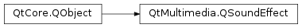

QSoundEffect¶
Synopsis¶
Functions¶
- def
category() - def
isLoaded() - def
isMuted() - def
isPlaying() - def
loopCount() - def
loopsRemaining() - def
setCategory(category) - def
setLoopCount(loopCount) - def
setMuted(muted) - def
setSource(url) - def
setVolume(volume) - def
source() - def
status() - def
volume()
Signals¶
- def
categoryChanged() - def
loadedChanged() - def
loopCountChanged() - def
loopsRemainingChanged() - def
mutedChanged() - def
playingChanged() - def
sourceChanged() - def
statusChanged() - def
volumeChanged()
Static functions¶
- def
supportedMimeTypes()
Detailed Description¶
The
PySide2.QtMultimedia.QSoundEffectclass provides a way to play low latency sound effects.This class allows you to play uncompressed audio files (typically WAV files) in a generally lower latency way, and is suitable for “feedback” type sounds in response to user actions (e.g. virtual keyboard sounds, positive or negative feedback for popup dialogs, or game sounds). If low latency is not important, consider using the
PySide2.QtMultimedia.QMediaPlayerclass instead, since it supports a wider variety of media formats and is less resource intensive.This example shows how a looping, somewhat quiet sound effect can be played:
QSoundEffect effect; effect.setSource(QUrl::fromLocalFile("engine.wav")); effect.setLoopCount(QSoundEffect::Infinite); effect.setVolume(0.25f); effect.play();Typically the sound effect should be reused, which allows all the parsing and preparation to be done ahead of time, and only triggered when necessary. This assists with lower latency audio playback.
MyGame() : m_explosion(this) { m_explosion.setSource(QUrl::fromLocalFile("explosion.wav")); m_explosion.setVolume(0.25f); // Set up click handling etc. connect(clickSource, &QPushButton::clicked, &m_explosion, &QSoundEffect::play); } private: QSoundEffect m_explosion;Since
PySide2.QtMultimedia.QSoundEffectrequires slightly more resources to achieve lower latency playback, the platform may limit the number of simultaneously playing sound effects.
-
class
PySide2.QtMultimedia.QSoundEffect([parent=nullptr])¶ Parameters: parent – PySide2.QtCore.QObjectCreates a
PySide2.QtMultimedia.QSoundEffectwith the givenparent.
-
PySide2.QtMultimedia.QSoundEffect.Loop¶ Constant Description QSoundEffect.Infinite Used as a parameter to PySide2.QtMultimedia.QSoundEffect.setLoopCount()for infinite looping
-
PySide2.QtMultimedia.QSoundEffect.Status¶ Constant Description QSoundEffect.Null No source has been set or the source is null. QSoundEffect.Loading The SoundEffect is trying to load the source. QSoundEffect.Ready The source is loaded and ready for play. QSoundEffect.Error An error occurred during operation, such as failure of loading the source.
-
PySide2.QtMultimedia.QSoundEffect.category()¶ Return type: unicode Returns the current category for this sound effect.
Some platforms can perform different audio routing for different categories, or may allow the user to set different volume levels for different categories.
This setting will be ignored on platforms that do not support audio categories.
-
PySide2.QtMultimedia.QSoundEffect.categoryChanged()¶
-
PySide2.QtMultimedia.QSoundEffect.isLoaded()¶ Return type: PySide2.QtCore.boolReturns whether the sound effect has finished loading the
PySide2.QtMultimedia.QSoundEffect.source().
-
PySide2.QtMultimedia.QSoundEffect.isMuted()¶ Return type: PySide2.QtCore.boolReturns whether this sound effect is muted
-
PySide2.QtMultimedia.QSoundEffect.isPlaying()¶ Return type: PySide2.QtCore.boolReturns true if the sound effect is currently playing, or false otherwise
-
PySide2.QtMultimedia.QSoundEffect.loadedChanged()¶
-
PySide2.QtMultimedia.QSoundEffect.loopCount()¶ Return type: PySide2.QtCore.intReturns the total number of times that this sound effect will be played before stopping.
See the
PySide2.QtMultimedia.QSoundEffect.loopsRemaining()method for the number of loops currently remaining.
-
PySide2.QtMultimedia.QSoundEffect.loopCountChanged()¶
-
PySide2.QtMultimedia.QSoundEffect.loopsRemaining()¶ Return type: PySide2.QtCore.int
-
PySide2.QtMultimedia.QSoundEffect.loopsRemainingChanged()¶
-
PySide2.QtMultimedia.QSoundEffect.mutedChanged()¶
-
PySide2.QtMultimedia.QSoundEffect.play()¶ Start playback of the sound effect, looping the effect for the number of times as specified in the loops property.
-
PySide2.QtMultimedia.QSoundEffect.playingChanged()¶
-
PySide2.QtMultimedia.QSoundEffect.setCategory(category)¶ Parameters: category – unicode Sets the category of this sound effect to
category.Some platforms can perform different audio routing for different categories, or may allow the user to set different volume levels for different categories.
This setting will be ignored on platforms that do not support audio categories.
If this setting is changed while a sound effect is playing it will only take effect when the sound effect has stopped playing.
-
PySide2.QtMultimedia.QSoundEffect.setLoopCount(loopCount)¶ Parameters: loopCount – PySide2.QtCore.intSet the total number of times to play this sound effect to
loopCount.Setting the loop count to 0 or 1 means the sound effect will be played only once; pass
QSoundEffect::Infiniteto repeat indefinitely. The loop count can be changed while the sound effect is playing, in which case it will update the remaining loops to the newloopCount.
-
PySide2.QtMultimedia.QSoundEffect.setMuted(muted)¶ Parameters: muted – PySide2.QtCore.boolSets whether to mute this sound effect’s playback.
If
mutedis true, playback will be muted (silenced), and otherwise playback will occur with the currently specifiedPySide2.QtMultimedia.QSoundEffect.volume().
-
PySide2.QtMultimedia.QSoundEffect.setSource(url)¶ Parameters: url – PySide2.QtCore.QUrlSet the current URL to play to
url.
-
PySide2.QtMultimedia.QSoundEffect.setVolume(volume)¶ Parameters: volume – PySide2.QtCore.qrealSets the sound effect volume to
volume.The volume is scaled linearly from
0.0(silence) to1.0(full volume). Values outside this range will be clamped.The default volume is
1.0.UI volume controls should usually be scaled nonlinearly. For example, using a logarithmic scale will produce linear changes in perceived loudness, which is what a user would normally expect from a volume control. See
QAudio.convertVolume()for more details.
-
PySide2.QtMultimedia.QSoundEffect.source()¶ Return type: PySide2.QtCore.QUrlReturns the URL of the current source to play
-
PySide2.QtMultimedia.QSoundEffect.sourceChanged()¶
-
PySide2.QtMultimedia.QSoundEffect.status()¶ Return type: PySide2.QtMultimedia.QSoundEffect.StatusReturns the current status of this sound effect.
-
PySide2.QtMultimedia.QSoundEffect.statusChanged()¶
-
PySide2.QtMultimedia.QSoundEffect.stop()¶ Stop current playback.
-
static
PySide2.QtMultimedia.QSoundEffect.supportedMimeTypes()¶ Return type: list of strings Returns a list of the supported mime types for this platform.
-
PySide2.QtMultimedia.QSoundEffect.volume()¶ Return type: PySide2.QtCore.qrealReturns the current volume of this sound effect, from 0.0 (silent) to 1.0 (maximum volume).
-
PySide2.QtMultimedia.QSoundEffect.volumeChanged()¶
© 2018 The Qt Company Ltd. Documentation contributions included herein are the copyrights of their respective owners. The documentation provided herein is licensed under the terms of the GNU Free Documentation License version 1.3 as published by the Free Software Foundation. Qt and respective logos are trademarks of The Qt Company Ltd. in Finland and/or other countries worldwide. All other trademarks are property of their respective owners.